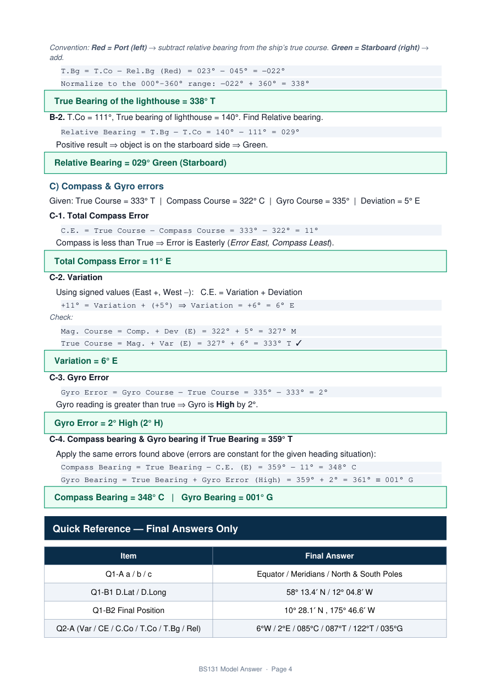
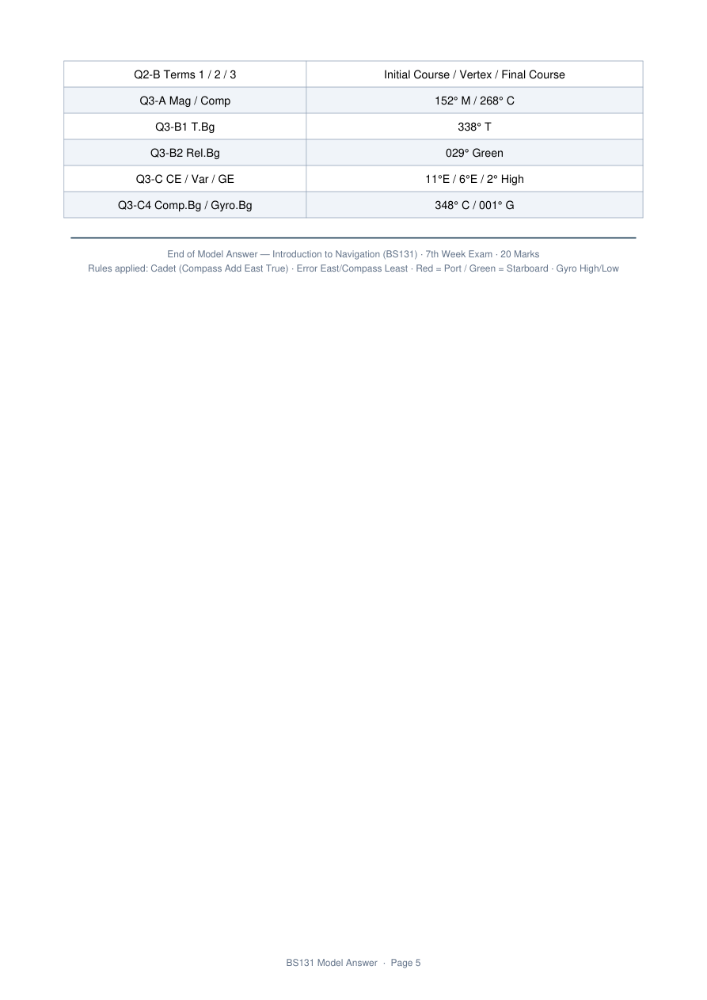

MODEL ANSWER — Introduction to Navigation (BS131)
7th Week Exam · 06 April 2025 · 1 Hour · 20 Marks
Detailed worked solutions with rules, intermediate steps, and final answers
A) Complete the following sentences
1-a.
Parallel of latitude is a small circle, the plane of which is parallel to the plane of ……………
A parallel of latitude is formed by the intersection of the Earth with a plane parallel to the equatorial plane.
1-b.
Rhumb line is the line on the earth's surface which cuts all …………… at the same angle.
A rhumb line (loxodrome) maintains a constant true course, so it intersects every meridian at the same angle.
1-c.
Meridians are semi great circles joining …………… and are perpendicular to the equator.
Each meridian is a semi-great circle running from the North Pole to the South Pole and cutting the equator at 90°.
B) Position calculations
B-1. D.Lat and D.Long
Pos. A = 28° 30.8′ S , 057° 28.6′ W
Pos. B = 29° 42.6′ N , 069° 33.4′ W
Sign convention: North (+), South (−).
B-2. Final position
Pos. A = 33° 24.8′ N , 172° 15.6′ E
D.Lat = 22° 56.7′ S · D.Long = 011° 57.8′ E
A) Extract values from the figure
M.N is 6° West of T.N; C.N is 2° East of T.N; heading from C.N = 085°; lighthouse from T.N = 122°.
| Quantity | Value |
|---|---|
| Variation | 6° W |
| Total Compass Error | 2° E |
| Compass Course | 085° C |
| True Course | 087° T |
| True Bearing | 122° T |
| Relative Bearing | 035° Green |
B) Gnomonic Projection terms
1 → Initial Course · 2 → Vertex · 3 → Final Course
A) Fill the table
Mag = Comp ± Dev (East added to compass → magnetic; West subtracted).
| C.Course | Dev. | Mag.Course | |
|---|---|---|---|
| 1 | 155° | 3° W | 152° M |
| 2 | 268° C | 5° E | 273° |
B) Relative / True bearings
B-1. T.Co = 023°, Rel = 045° Red
B-2. T.Co = 111°, T.Bg = 140°
C) Compass & Gyro errors
True 333° T · Compass 322° C · Gyro 335° · Dev 5° E
| Item | Final Answer |
|---|---|
| Q1-A a / b / c | Equator / Meridians / North & South Poles |
| Q1-B1 | 58° 13.4′ N / 12° 04.8′ W |
| Q1-B2 | 10° 28.1′ N , 175° 46.6′ W |
| Q2-A | 6°W / 2°E / 085°C / 087°T / 122°T / 035°G |
| Q2-B | Initial Course / Vertex / Final Course |
| Q3-A | 152° M / 268° C |
| Q3-B1 / B2 | 338° T / 029° Green |
| Q3-C | 11°E / 6°E / 2° High · 348°C / 001°G |



